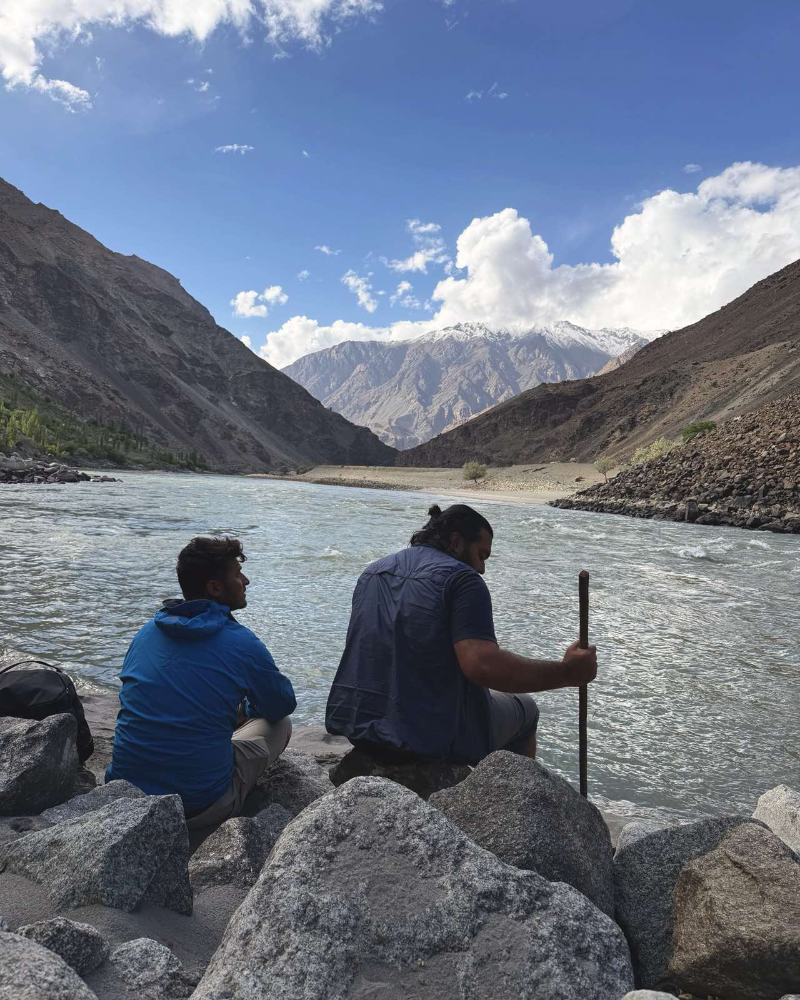

Who we are
The story
Cycling Markhor began with two friends and one conviction: that the best way to know Baltistan is from the saddle.
Our rental fleet is already rolling out of Skardu — and on a piece of land looking out at the mountains, we're building what comes next: a mountain cafe, traditional brangsas, and a villa. A place to ride from, and a place to return to.
